接下来，我们先回顾一下这个问题：我们是开店的老板，有一种商品的进价是20元，如果一分钱不赚卖出去，每个月最多成交1000单，但这样肯定不赚钱，所以要提高价格，假设每提高1元，就会少来100个人，那么要如何定价才能每月赚2100元呢？上次我们对这个问题求解，得到的结论是卖3元钱或者7元钱都可以．这时候有人就会想到了，我凭什么一个月只能赚2100元呢？既然二次方程这么好用，我不能一个月赚5000元吗？那么接下来我们就试试，如何定价能让这件商品一个月赚5000元．
仍然是假设自己的利润是x 元，来的客户数仍然是（1000－100x ），总利润是5000，于是我们就得到了方程式：x （1000－100x ）＝5000，左右两侧除以100，得到x （10－x ）＝50，移项变号，得到x 2 －10x ＝－50，为左侧配方，在左右两侧增加25，得到x 2 －10x ＋25＝－50＋25，化简得到（x －5）2 ＝－25．
一个数的平方是－25，这怎么可能呢？因此要想通过这种商品一个月赚5000元无论如何是做不到的．看来贪得无厌是不行的．那么，当我们面对一个二次方程的时候，我们怎么判断它有没有解呢？要想了解这个问题，我们还得把二次方程的求根公式翻出来：
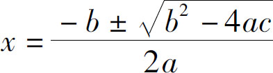
．所谓有解，就是要让这个公式有意义，那这个公式里边的重点又是什么呢？第一个是分母不为0，第二个是根号里头的数必须得不是负数．分母不为0无须判断，为什么呢？因为分母是2a ，a 可是x 2 的系数，如果a 等于0了，整个算式不就没有x 2 这一项了吗？没有x 2 它也就不是二次方程了，所以这个a 不等于0的问题是无须考虑的．因此就只剩下这么一个问题了，根号里的东西必须大于等于0，即b 2 －4a c ≥0．这个代数式就是用于判断方程是否有解的，因此它又叫二次方程的判别式：
当b 2 －4a c ＞0时，原方程有两个解；
当b 2 －4a c ＝0时，原方程有一个解；
当b 2 －4a c ＜0时，原方程无解．
我们刚才的定价问题里边，a、 b 、c 都是多少，我们只要看一下中间这个简化方程就可以了：x 2 －10x ＋50＝0．其中x 2 的系数是1，也就是a ＝1，x 的系数是－10，也就是b ＝－10，还有一个50是c 的值，因此，b 2 －4a c ＝（－10）2 －4×50＝－100．
所以这个方程肯定是无解的！一再强调方程什么时候有解有什么用呢？我就想知道怎么样定价才最赚钱！接下来，我们就一起研究一下这个问题．
在上题中，我们赚的总钱数是多少呢？是（1000－100x ）x ，那么什么叫最赚钱呢？最赚钱就是在什么条件下这个代数式的值最大．可是谁能一眼看出来（1000－100x ）x 最大值是多少呢？不要紧，我们照样可以采用配方法求解，首先，我们把这个算式展开，变成1000x －100x 2 ，提取公因式，把－100拎出去，得到－100（x 2 －10x ），对括号中的部分配方，得到－100（x 2 －10x ＋52 －52 ），化简得到－100（x －5）2 ＋2500．
要想让这个算式取得最大值，必须让（x －5）2 取得最小值，它的最小值是0，所以整个算式的最大利润就是2500．
以上我们用配方法求得了二次式的最大值，那么有没有更简单的办法让我们求出极值呢？可否像求根公式一样，也给我一个标准的二次三项式求极值的公式呢？那我们就一起来分析一下吧．
a x 2 ＋b x ＋c 有没有最大值或者最小值呢？我们仍然需要对这个代数式进行配方，我们首先把a 作为公因式提到外边，得到
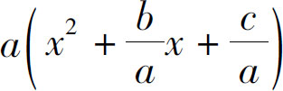
，根据一次项的系数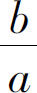
，配方得到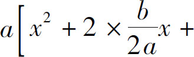
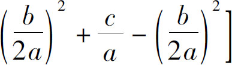
，化简得到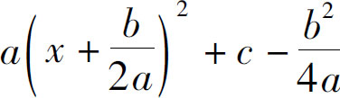
．此时，这个代数式只有一个平方项和一个常数项了，于是，我们就可以讨论条件了，我们知道，因为平方项的最小值是0，所以，当平方项为0时，该式可以取得极值
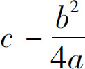
，平方项为0意味着：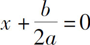
，即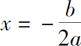
．那么，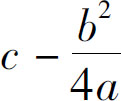
究竟是它的最大值还是最小值呢，这要取决于系数a 的取值范围：当a ＞0的时候，这个数值就是它的最小值；当a ＜0的时候，这就是它的最大值．以上就是标准二次式的极值条件，当遇到具体问题时，我们同样只需要找到a、 b 、c 对应的数值，然后按照极值表达式把数值代入，就可以求得最大值或者最小值．
以商品定价的问题为例：赚钱的总数为1000x －100x 2 ，其中二次项系数a 是－100，一次项系数b 是1000，c 是0，因为a ＜0，所以它有一个最大值，最大值为
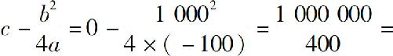
2500．结果仍然是2500元，跟刚才我们用配方法得到的结果是一样的．那么我们的利润定在多少钱才能赚2500元呢？当
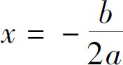
的时候，b 是1000，a 是－100，2a 就是－200，因为前头还有个负号，所以结果就是1000÷200＝5．也就是说商品的利润定在5元钱时，该商品的利润达到最高点2500元．我们介绍了二次方程有解的条件，那就是判别式b 2 －4a c ＞0；我们还介绍了二次式的极值条件，当
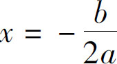
时，代数式可以取得最大或最小值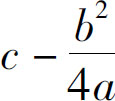
．在我们的学习过程中，你是否感受到了二次方程的重要性呢？